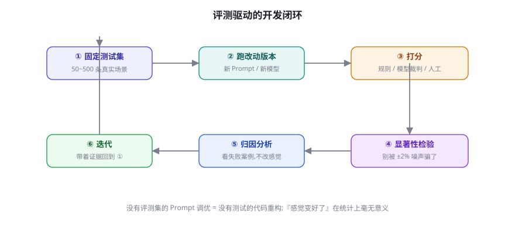
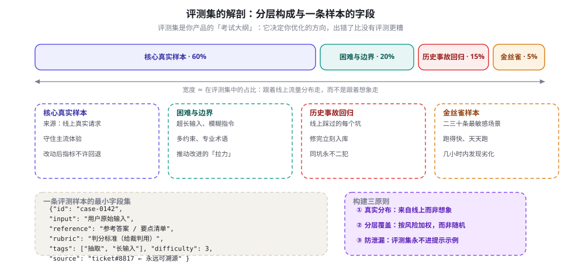
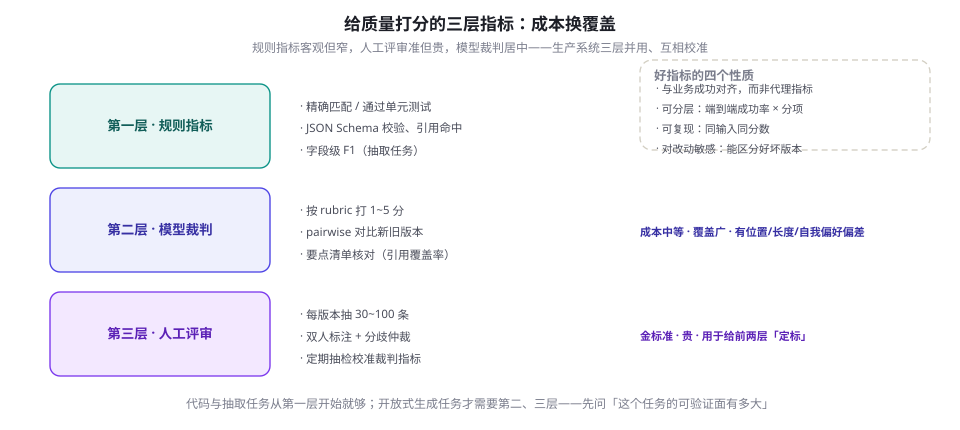

评测思维入门：科学地度量 LLM 输出
改了提示词、换了模型，你怎么知道是变好了，还是只是换了一批错误？本章建立评测的最小闭环：从真实流量构建分层评测集、用三层指标给质量打分、用置信区分辨「真提升」与「噪声」，最后把评测塞进 CI 变成回归测试。这是全书「先度量再动手」习惯的起点，也是第 50 章 Agent 评测方法论的地面部分。
「感觉变好了」不算数
LLM 输出有两个性质决定了「拍脑袋评测」必然失败：随机性——同一提示跑两次，输出可以大不相同（第 5 章的采样机制决定了这一点）；多维性——一段回答可以同时更流畅、更啰嗦、更少事实错误，你「感觉变好」时往往只是三个维度里恰好拣了一个顺眼的。没有固定度量，提示工程就退化成印象派绘画：每次修改都像是进步，因为它确实「看起来」不一样了。
代价最惨重的是无意识的回归。团队迭代到第 20 版提示词时，第 7 版已经修好的 bug 又回来了，而没有任何人察觉——因为没有人会每次改动后把 200 个历史场景重跑一遍。软件工程早就为同样的问题准备了答案：单元测试与回归测试。LLM 应用唯一的区别是被测对象从确定性代码换成了概率性生成，于是「断言相等」变成「断言质量不降」，测试的哲学不变。本章的一句话纲领：没有评测集的提示调优，等于没有测试的代码重构。
把团队按评测成熟度分三档，你可以定位自己在哪一档。第一档：氛围驱动——改动靠演示与直觉，回归靠用户投诉发现，这是默认状态，也是大多数线上事故的来源。第二档：一次性评测——大版本前手工跑一遍固定样本，有了尺子但没养成习惯，改动仍然频繁漏网。第三档：持续评测——评测进 CI、金丝雀日跑、失败样本回流，质量曲线有档案可查。从第一档到第二档只需要本章前半章的功夫（几百行代码），从第二档到第三档需要的是纪律与投入——这也是大多数团队卡住的位置。

这个闭环有六步，缺一步都会让它退化。固定测试集是「控制变量」——没有它，两次跑分不可比；打分是「测量」；显著性检验是「别把噪声当信号」，1 个百分点以内的波动在百条量级的评测集上通常毫无意义；归因分析是「理解为什么」，只看总分不看失败案例的团队，永远在黑暗里开枪；迭代是「带着证据回去」。工程量最大的其实是第六步之后的隐性动作：把新发现的失败样本追加进测试集——评测集因此像滚雪球一样越来越贴近你产品的真实难点，这是任何公开基准都给不了的复利。
评测集见得多了，提示词就会向它过拟合：你在那 50 条样本上精益求精，线上真实流量却一塌糊涂。两条纪律可以守住底线：其一，评测集只增不改——历史样本永远不许为了好看而删改；其二，留一小撮「金丝雀」样本与一个从不参与调优的保留集（Hold-out），每次大改动后用保留集验证一次，两边分数走向不一致时，相信保留集。
构建评测集：从真实流量到金样本
评测集的质量决定一切，而它最大的敌人是「想象」。闭门造出来的样本反映的是你对用户的想象，不是用户的真实分布——两者的差距往往大到荒谬（真实请求里一半是模糊的、带错字的、多任务混杂的）。构建的正路只有一条：从线上来，到线上去。起点是生产日志与工单（还没有线上流量？找最接近的用户角色做几小时真实任务，把过程原样记录）；从中按分层抽样挑出核心样本，再把每一个线上翻车的案例变成回归样本。规模上不用贪大：起步用 50~200 条量级的精选集，它的价值远大于随手拼凑的 1 万条；等接入 CI 再按需扩容（第 8.4 节会算清样本量的账）。

四类成分各有分工，缺一类就有一类盲区。核心真实样本守住主流体验，是回归测试的主体；困难与边界样本是改进的拉力——超长输入、模糊指令、多重约束，模型现在做不对的任务定义了你的工作方向；历史事故样本最便宜也最值钱，每个线上 bug 修复后花两分钟入库，一年后你就有了一堵「同坑不二犯」的墙；金丝雀样本只要二三十条，但它跑得快、天天跑，是供应商悄悄换模型、你的依赖悄悄劣化的最早警报（供应商静默更新是真实存在的，第 9 章讲过知识截止，这里补上行为截止）。
import json
from dataclasses import dataclass, asdict
@dataclass
class EvalCase:
id: str # 稳定 ID：跑分结果可对账、样本可追溯
input: str # 用户原始输入，一字不改地来自线上日志
reference: str # 参考答案 / 要点清单；开放式任务可为空
rubric: str # 判分标准：规则、模型裁判、人工三层共用
tags: list # ["抽取", "长输入"]：分层报告的维度
difficulty: int # 1~5：报告分位数与定位薄弱区时用
source: str # 来源单据号：每个样本永远可溯源
def to_jsonl(cases, path):
with open(path, "w", encoding="utf-8") as fh:
for c in cases:
fh.write(json.dumps(asdict(c), ensure_ascii=False) + "\n")字段设计里最容易被省掉又最不该省的是 source 与 rubric。前者让「这条样本为什么存在」永远可查——三个月后没人记得 case-0142 是哪张工单来的，而它的价值恰恰取决于那个场景还存不存在；后者是判分的契约，接下来你会看到，同一份 rubric 会被规则、模型裁判和人工评审三层共用。另一个实用建议是给样本打 tags：总分掩盖局部退化是评测的常见假象——全局准确率持平，但「长输入」标签下的子集掉了 10 个百分点，只有分层报告能看见。
两类特殊样本值得单独立项。该拒答的样本：知识库没有依据的问题、超出权限的请求、故意诱导的提问——它们考验的不是「答得好」而是「知道不该答」，没有这类样本的评测集会训练出「什么都要强行答」的系统（与第 9 章幻觉的成因呼应）。带标准答案过程的样本：对 Agent 与多步任务，除了参考结果还可以记录参考步骤（先检索什么、再调用什么），为第 50 章的「过程 vs 结果」评测留下接口——现在只需要在字段上留一个可选的 steps 列表。另外，标注质量要有抽检：人工写参考答案也会错，双人独立标注、分歧仲裁的老规矩在这里同样适用，一份错漏百出的参考答案集比没有更糟，因为它会把模型往错误方向「优化」。
评测集还需要低频的「年度体检」：每季度抽半小时审计一次——source 指向的场景还存在于业务里吗？difficulty 标注在模型能力增长后还成立吗（去年难、今年易的样本可以降级为核心样本）？rubric 里的标准是否还与产品目标一致？评测集是活的资产，放着不管会悄悄变成「考古现场」：一半样本考的是你已经下线的功能，新功能却没有任何考题。审计后允许的操作是「标记降级」与「补充替代样本」，依然不允许删除——历史就是历史。
指标设计：把质量变成数字
有了样本，下一个问题是「怎么打分」。答案不是一个指标而是一套体系，按「成本换覆盖」分三层：规则指标最便宜，只覆盖可形式化的子集；模型裁判（LLM-as-Judge）覆盖广但有系统偏差；人工评审是金标准但昂贵，用于给前两层定标。好的生产系统三层并用：规则指标日跑、模型裁判每版本跑、人工抽样定期校准。

选指标前先排除一个错误选项：NLP 时代的传统自动指标。BLEU、ROUGE 这类基于 n-gram 重合的分数，是为「翻译、摘要」这类有单一参考输出的任务设计的，在开放式生成上有两个致命伤——同义改写会被扣分（参考答案是「快速办理退款」，模型写「立即为您退回款项」明明更好），冗长复读反而可能加分。它们今天唯一还有用的场景是「输出与参考措辞强绑定」的窄任务（如固定话术合规检查）。更普遍的教训是：指标是代理，代理会失真——Goodhart 定律在评测上的版本是「当代理指标成为目标，它就不再是好指标」，所以每个指标都要定期用人工抽样回检「它还在测量我们关心的东西吗」。
| 任务类型 | 第一层（规则） | 第二层（模型裁判） | 人工焦点 |
|---|---|---|---|
| 分类 / 路由 | 准确率、混淆矩阵、按标签分层 | 边界样本的合议 | 定义不清的类别 |
| 信息抽取 | 字段级精确率/召回率（F1） | 值语义等价判断（「1.28 万元」= 12800） | 争议样本仲裁 |
| 代码生成 | 单元测试通过率（pass@k） | ——能用测试就不必裁判 | 测试覆盖不到的设计质量 |
| RAG 问答 | 引用命中率、拒答正确率 | 按要点清单核对忠实度与完整性 | 忠实度抽样审计 |
| 开放式写作 | 格式与长度约束 | rubric 评分 / pairwise 对比 | 定期抽检校准裁判 |
模型裁判是 2023 年以来最重要的评测工程进展，它让「开放式任务也有可用指标」成为现实。机制：把输入、待评输出与 rubric 填进裁判提示，让一个（通常是更强的）模型按标准打分或做新旧对比。它的可信度已经被系统研究过：MT-Bench 论文（Zheng et al., 2023）报告了与人类偏好八成量级的一致率，但也点名了三类系统偏差——位置偏差（pairwise 时偏爱先出现的答案，需交换顺序各评一次）、长度偏差（偏爱更长的回答，会奖励啰嗦）、自我偏好（偏爱同家族模型的输出）。工程上的对策都在第 57 章展开，本章先记住一条：裁判只回答「符不符合 rubric」这种封闭问题，不要让它回答「哪个更好」这种开放口味题——前者稳得多。
import json
SCORE_SCHEMA = { # 输出必须是合法 JSON，解析率有保证
"type": "object",
"properties": {
"score": {"type": "integer", "minimum": 1, "maximum": 5},
"reason": {"type": "string"}
},
"required": ["score", "reason"]
}
JUDGE_TMPL = """你是严格的质检员。只依据评分标准打分，不要脑补。
评分标准：{rubric}
用户输入：{input}
待评回答：{output}
只输出 JSON：{{"score": 1~5 的整数, "reason": "一句话依据"}}"""
def judge_pass(case, output, pass_line=4):
raw = call_llm(JUDGE_TMPL.format(rubric=case["rubric"],
input=case["input"], output=output),
json_schema=SCORE_SCHEMA, temperature=0) # 裁判用零温度
return int(json.loads(raw)["score"]) >= pass_line只有一个总分是最危险的评测设计。推荐的两层结构：端到端指标回答「任务完成了吗」（整单通过率、一次解决率），分项指标回答「哪一环坏了」（检索命中率、抽取字段 F1、格式合法率、裁判质量分）。分项的意义在归因：端到端掉了 5 个百分点，分项能告诉你是检索退了还是生成退了——没有它，每次回归都是「全部重查」。
方差、置信区间与显著性
现在轮到本章最反直觉也最值钱的一节。你把评测集跑了两个版本：A 版 72 分，B 版 74 分，B 更好吗？不一定——你很可能看到的是噪声。分数的不确定性来自两个源头：采样随机性（temperature 大于零时同一版本跑两遍分数也不同）与评测集本身的抽样波动（你测的只是全部真实流量的一个样本）。两个源头都可以量化，量化工具是统计学的标准件。
先算一笔账，感受量级。对二值化的通过率指标，标准误是 √(p(1−p)/n)：当 p≈0.7 时，n=100 的评测集，95% 置信区间宽约 ±9 个百分点——A 版 72 分和 B 版 74 分的差距完全被噪声淹没；n=500 时区间收窄到 ±4 个百分点，仍不够分辨 2 分差距；要到千条量级才能可靠分辨一两个百分点的改进。三个立刻可用的推论：小评测集上只关注大幅改动（5 个百分点以上）；想分辨小幅改进，先扩样本量或做配对设计；报告分数永远带区间，「准确率 72%」和「准确率 72% ± 9%」是两个完全不同的主张。
import random
def accuracy(preds, refs):
return sum(p == r for p, r in zip(preds, refs)) / len(refs)
def bootstrap_ci(preds, refs, n_boot=2000, alpha=0.05):
"""把评测集有放回重抽 2000 次，每次算一个准确率，取 2.5%/97.5% 分位。"""
n = len(refs)
stats = []
for _ in range(n_boot):
idx = [random.randrange(n) for _ in range(n)]
stats.append(accuracy([preds[i] for i in idx], [refs[i] for i in idx]))
stats.sort()
lo = stats[int(n_boot * alpha / 2)]
hi = stats[int(n_boot * (1 - alpha / 2)) - 1]
return accuracy(preds, refs), lo, hi
acc, lo, hi = bootstrap_ci(preds, refs)
print(f"accuracy {acc:.2f} 95% CI [{lo:.2f}, {hi:.2f}]")
# n=100、p≈0.7 时典型输出：accuracy 0.72 95% CI [0.63, 0.80]区分噪声与信号还有一件利器：配对比较。两个版本各跑同一份评测集，逐条记录谁对谁错——只看「两条都对的」和「都错的」之外的那部分（不一致样本），噪声瞬间小一个量级，因为共同部分被抵消了。这正是 McNemar 检验的直觉版本：A 对 B 错 30 条、A 错 B 对 12 条，这个 18 条的不对称才是真实的信号。随机性本身也能压一压：评测时固定 temperature=0（多数供应商还支持固定 seed，但跨供应商不可移植）；对必须高温的任务，每个样本跑 3~5 遍取多数或均值。系统化的统计框架（含多重比较、功效分析）见 Miller (2024) 的《Adding Error Bars to Evals》，它把「该用多少样本」从玄学变成了可算的题。
还有一个统计陷阱叫多重比较。你试了 20 版提示词，挑评测分数最高那版上线——若改进其实是噪声，20 次里挑最大值，撞出「假提升」的概率高得惊人（大约 1−0.95²⁰，超过六成量级）。对策有二：把 20 次尝试分成「探索」与「验证」两阶段，探索期随便比，进入验证期只对最强候选做一次带区间的正式对比（在新的保留集上）；或者接受「验证集跑多次」的现实，用更严格的显著性门槛（Bonferroni 式校正：比较次数越多，单次要求的置信越高）。听起来学术，其实只有一句话：胜出者要在没见过的数据上复验一次，这句话能替你挡掉大部分虚假繁荣。
顺带澄清一个常见误解：temperature=0 不等于逐位确定。服务端推理的批处理调度、浮点并行归约顺序都会引入微小数值扰动，遇上前缀几乎相同的分布时，输出仍可能翻转。所以「固定温度压噪声」是概率意义上的缓解而非保证，评测脚本不要依赖「同输入必同输出」的假设，两次跑分结果不同时先怀疑自己而不是供应商。
「每个样本跑几遍」也顺手给出经验法则：temperature=0 的确定性任务，一遍即可；有采样随机性的任务，3~5 遍取多数投票或均值，能把均值的标准误压低约一半量级（标准误随重复次数的平方根缩小）；只有当你想测量「同一版本自己的波动」时，才需要 10 遍以上的重复——把它当成一次性校准实验，而不是日常开销。算力预算紧张时，优先保证样本覆盖广度，其次才是重复深度：n=200 跑一遍的置信区间，通常优于 n=50 跑四遍。
每个跑分记录至少包含：评测集版本（hash）、被测版本（提示 hash / 模型版本）、采样参数、时间与操作人。两个月后你看到「10 月的版本 68 分、12 月的 74 分」，没有这些元数据就无法回答「是提示变了还是模型变了还是样本变了」。轻量做法是每次跑分把配置与结果一起写进 JSON 存档——评测的可复现性从记账开始。
回归测试文化：让评测进 CI
前三节搭建了「能测」的能力，这一节解决「肯测」的纪律。评测流程如果依赖某个人记得在发版前跑一下，它一定会被忘掉——正确的归宿是 CI：每次改动提示、模型、检索参数的 PR 自动触发评测，分数回退超过容差就阻止合并。这一步把「质量」从口头文化变成机器强制，是评测思维的成人礼。评测本身也调用付费 API，上一章（第 12 章）的批处理与预算护栏在这里派上用场。
# ci_eval_gate.py —— 接入 CI：unittest 之后跑，退出码非零即失败
import json, subprocess, sys
BASELINE = json.load(open("eval/baseline.json")) # 上个通过版本的指标档案
run = subprocess.run(["python", "-m", "myapp.eval", "--set", "golden"],
capture_output=True, text=True, check=True)
current = json.loads(run.stdout)
failed = []
for metric, base in BASELINE.items():
if current[metric] < base - 0.02: # 容差按指标噪声定，别拍脑袋
failed.append(f"{metric}: {base:.3f} -> {current[metric]:.3f}")
if failed:
print("评测回归，阻止合并：\n" + "\n".join(failed))
sys.exit(1)
print("评测门禁通过：", json.dumps(current, ensure_ascii=False))落进 CI 之前，有三个工程决定要做对。快慢分离：金丝雀 30 条挂在每次 push，200 条核心集挂在每次 PR，完整评测集每晚定时跑——评测本身也调用付费 API，无差别全跑既慢又烧钱（上一章的批处理在这里派上用场）。容差要按噪声定：上一节算过，百条样本 ±9 个百分点的区间，所以小集合的容差要宽、或者干脆只做「方向观察」；千条集合才能设 1~2 个百分点的硬门禁。失败样本回流：CI 拦下的每次回归，修复后把肇事样本固化进评测集，让每一次事故永久提高系统的免疫力。这条闭环跑顺之后，团队会获得一个意外红利：因为回归有兜底，大家敢做激进重构了——从手写提示迁移到模板系统、从模型 A 换到模型 B，从「季度大冒险」变成「一个下午的普通 PR」。
夜跑的失败也要有分诊流程，否则评测会沦为「红色噪音」。每早要回答三个问题：这次失败是真实回归（我的改动错了——回滚或修复）、环境漂移（供应商更新了模型、外部 API 变了——记录并加样本）、还是评测基础设施故障（网络抖动、沙箱挂了——重跑确认）。三者的处置完全不同，混在一起会消耗团队对评测的信任：狼来了喊三次，门禁就没人当真了。工程技巧是给夜跑结果加「连续性判断」——单个样本失败重跑一次确认，指标连续两天越线才升级为事故。
评测数据库的管理同样要立规矩：评测集进版本库、改动走 PR 评审（它就是代码）；样本只增不删，废弃样本标记而不移除；基线档案（baseline.json）只随「通过评审的合并」更新。这些纪律琐碎，但评测系统的公信力正是建立在其上——一个可以被随手改的评测集，等于没有评测集。
与第 50 章的分工：私有评测与公共基准
本书还有一整章讲评测——第 50 章「Agent 评测方法论」。两者不是重复而是分工，提前说清楚免得你迷路：本章管你家的产品，第 50 管全行业的尺子。私有评测集回答「我的改动有没有让我的用户场景变好」，公共基准（SWE-bench、GAIA、WebArena 等）回答「这个模型在同类任务上处于什么水平」。两者互为杠杆：私有评测决定日常迭代方向，公共基准决定选型与期望管理——但永远不要用后者替代前者，也不要用前者否定后者。
| 维度 | 本章：私有评测集 | 第 50 章：公共基准 |
|---|---|---|
| 回答的问题 | 「我的改动让我的场景变好了吗」 | 「这个模型/系统在通用维度上处于什么水平」 |
| 数据来源 | 自家线上日志、工单、事故 | 精心设计并公开的固定任务集 |
| 规模与成本 | 数十到千条，跑在自家 CI 里 | 数百到上万条，成本高、跑得少 |
| 失效方式 | 评测集过拟合（长期不改样） | 数据泄漏与饱和（分数涨到头） |
| 典型误用 | 把评测集当训练材料反复优化 | 用榜单分数推断自家场景表现 |
| 对应章节 | 本章 + 第 56 章（沙箱与 CI）+ 第 57 章（裁判可信度） | 第 50-55 章逐基准精读 |
本章的落地边界也要交代：这里只覆盖「单次输出好不好」的度量，Agent 的评测要难一档——多步轨迹的过程质量、工具调用的效率、长时程任务的完成度，都需要新的方法论与沙箱设施，那是第 50 章（方法）与第 56 章（沙箱与 CI 集成）的正题。你现在需要带走的只有一套可迁移的习惯：先有固定样本集，再有分层指标，再有置信区间，最后进 CI。这个顺序在单轮应用和 Agent 系统里完全一致，变的只是每一环的实现复杂度。
本章小结
- LLM 输出的随机性与多维性使「感觉变好」不可信；没有评测集的提示调优等于没有测试的代码重构，最贵的代价是无意识回归。
- 评测集从线上真实流量构建，按「核心样本六成、困难边界两成、历史事故一成半、金丝雀半成」分层起步；样本带 id/reference/rubric/tags/source，只增不改、永远可溯源。
- 指标分三层：规则指标（客观、覆盖窄）→ 模型裁判（覆盖广，注意位置/长度/自我偏好三类偏差）→ 人工评审（金标准，用于校准前两层）；报告时端到端与分项两层拆开，总分掩盖局部退化。
- 分数必须带不确定性：p≈0.7 时百条样本的 95% 置信区间约 ±9 个百分点，分辨小幅改进需要千条量级或配对设计；自助法给出区间，固定 temperature 与多数投票压采样噪声。
- 评测进 CI 才有纪律：金丝雀日跑、核心集挂 PR、完整集夜跑；门禁容差按实测噪声定；失败样本修复后回流，评测集当代码管理。
- 本章的私有评测与第 50 章的公共基准分工：迭代靠自家评测集，选型靠公共榜单；两者失效模式不同，不可互相替代。
自测题
- 为什么「B 版比 A 版高 2 分，所以 B 更好」在小评测集上是危险推理？写出 p≈0.7、n=100 时的 95% 置信区间量级。（提示：√(p(1−p)/n) ≈ 4.6 个百分点，区间约 ±9。）
- 评测集的四种成分（核心/困难/事故/金丝雀）各自拦住什么盲区？如果把「历史事故」那一类砍掉，会发生什么？（提示：同坑二犯；回归无处固化。）
- 模型裁判有哪三类系统偏差？「只让裁判回答封闭问题」为什么能显著提高可信度？（提示：位置、长度、自我偏好；口味题没有稳定 rubric。）
- 配对比较为什么能把噪声压小一个量级？它和你常听的 A/B 测试有什么关系？（提示：不一致样本；同样本自对照。）
- CI 门禁的容差为什么不能统一设成 1%？快慢分离的三层跑分各自挂在什么时机？（提示：区间宽度随 n 变化；push/PR/夜间。）
- 你的私有评测 95 分、公共基准成绩平平，或反之——两种情形分别说明什么？（提示：过拟合自家分布 vs 通用能力与场景不匹配。）
参考文献与延伸阅读
- Liang, P. et al. (2022). Holistic Evaluation of Language Models (HELM). TMLR 2023. arXiv:2211.09110
- Zheng, L. et al. (2023). Judging LLM-as-a-Judge with MT-Bench and Chatbot Arena. NeurIPS 2023 Datasets & Benchmarks. arXiv:2306.05685
- Miller, J. (2024). Adding Error Bars to Evals: A Statistical Approach to Language Model Evaluations. arXiv:2411.00640
- Chen, M. et al. (2021). Evaluating Large Language Models Trained on Code（HumanEval 与 pass@k）. arXiv:2107.03374
- Liu, Y. et al. (2023). G-Eval: NLG Evaluation using GPT-4 with Better Human Alignment. arXiv:2303.16634
- OpenAI Evals 框架. github.com/openai/evals；promptfoo：提示与模型回归测试工具. github.com/promptfoo/promptfoo